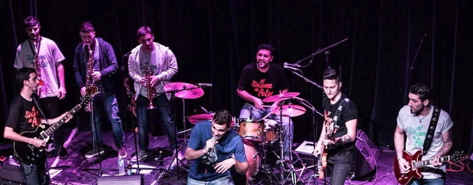
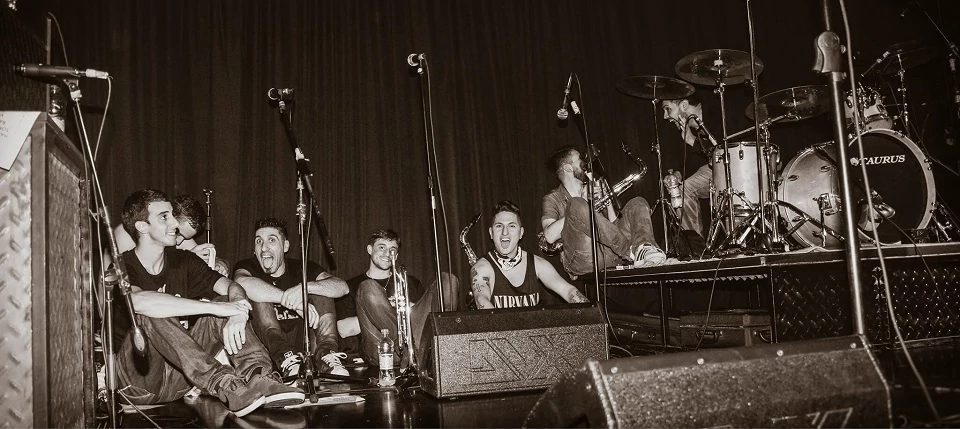
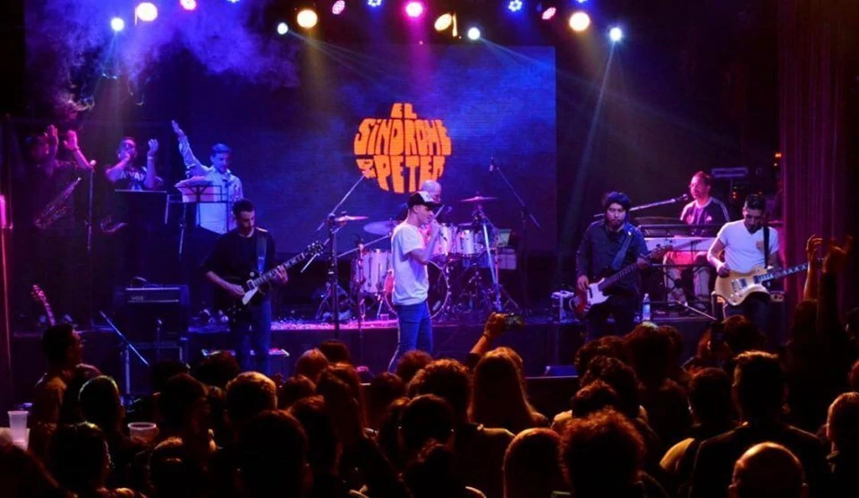

Biografía
Entre caminos que comienzan por motivos diferentes, hoy nos toca resumir con un relato, la historia que a lo largo de los años a costa de sacrificio, esfuerzo y dedicación define a este grupo de novatos impacientes por el rock con el nombre de “El Síndrome de Peter”.
El nombre surgió luego que, uno de los integrantes de la banda recibiera en una sesión terapéutica el diagnostico en el cual se lo definía con la inmadurez de un niño, el mismo lo propuso en un ensayo y sin dudarlo los miembros restantes lo adoptaron como nombre oficial. En algunas notas, el cantante se refirió al nombre con un fin irónico haciendo alusión a la necesidad de mantener al niño interior despierto.
Descubierta por el sol un 1 de Enero de 2011, nacida en el corazón de la Ciudad Madero y con una transformación en esta corta trayectoria que promete a simple vista ir por más.
Sus integrantes: Nicolás Grosso (Cantante y Compositor), Sergio Cortese (Guitarra), Matías Gabetta (Guitarra), Ariel Mansilla (Bajo), Miguel Fernández (Batería), Damián Cabral (Saxo Tenor) y Daniel Grosso (Trompeta).